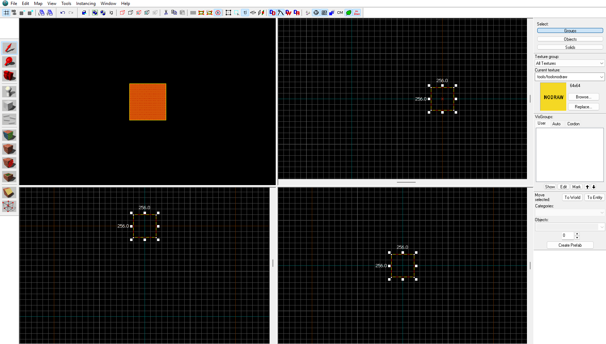

Layout
Here is Hammers default layout. You have 4 main windows. One is the 3D view, and
the rest are your top, front, and side views. When you load up Hammer, you'll have a yellow box like this.
Resize the grid with "[" and "]". CTRL+Scroll allows you to zoom. To move around in the 3D window, click
into it and hold right click to look around and WASD to move the camera.

This yellow box (along with walls, floors, ceilings, etc) is called a brush. Click on the brush in any window and
you can resize it with the white squares and the numbers tell you how thick it is.
To make a floor, lets make it 8 units flat in the front or side window.
Next we'll add a texture. Click the Texture Application tool on the left-hand side. It should open a "Face Edit Sheet" window. Click "browse".
From here you can select a texture. Use the filter to search for a material. I'll search for "wood". Double-click the one you choose.
To apply it, right-click on the surface of our yellow brush. Alt+Right-click aligns it with other textures, but that's not needed now.
Now lets make a wall. In the front or side view, click the floor brush and shift+drag it on top of itself. Then use the white squares to resize it. It should be 128 units tall.
Make two more walls for the other sides. It may be easy to click and drag our first wall in the top view window.
Again, lets use the Face Edit Sheet to apply a texture like before. I'll search for "plaster". Remember to right-click the side you want the texture on. You may need to resize the walls
as needed so the texture aligns correctly.
Now lets make a wall with a door. Shift+drag an existing wall to the empty side. Select the cutting tool on the left-hand side. Drag on the grid to line up your cut. If one
side is red, click the cut tool icon again until both are white. the Enter key makes the cut, and now you have two walls. Resize and cut as needed to make a hole which whill become our doorway.
The door brush should be 112 units tall and 56 wide. Remember to apply a door texture on both sides. (Alt+right-click aligns texture on both sides)
Don't forget to add a ceiling by shift+draging the floor to above the walls and add a texture to it.

You can use the clipping tool to cut out the door frame and make the door itself 2 units thick. In order for the door to function properly, we need to change it from a brush
into a func_door_rotating. Double-click the door in the 3D window. An "Object Properties" window will pop up. Look for "func_detail" and change it to func_door_rotating and click apply.
You can change the sounds it makes, how long it stays open, it's speed, etc in the Class Info tab. Switch over to the Flags tab to enable use by players. Finally, look for a white circle
in the center of the door in the top view window. Drag it to the edge of the door the hinges would be on (because this circle represents the hinge axis).
We can make this empty room feel more livley with props. Click the Entity Tool on the left-hand side and tap the floor in the 3D view. A green man will show up.
With the selection tool, double-click him. The Object Properties window will show up again. This time, click on info_player_start and change it to "prop_physics". In the Class Info tab
find "World Model" and double-click it. Here you can choose what model you would like by searching with the filter. I searched "table" and chose this circle shaped one.
Now all that's left is our spawnpoint. Click the Entity Tool on the left-hand side and click where you want the player to start. I've chosen the floor. The green guy will pop up again.
This is called "info_player_start" and tells the game "the player starts here!". Run your map by saving and pressing F9.
Note that this is a very bare-bones map for simplicity. Of course, you can place as many props and such to make it feel more interesting. Support beams, windows, and
other details like that are easily added with brushes and prop_physics.
Back to Top